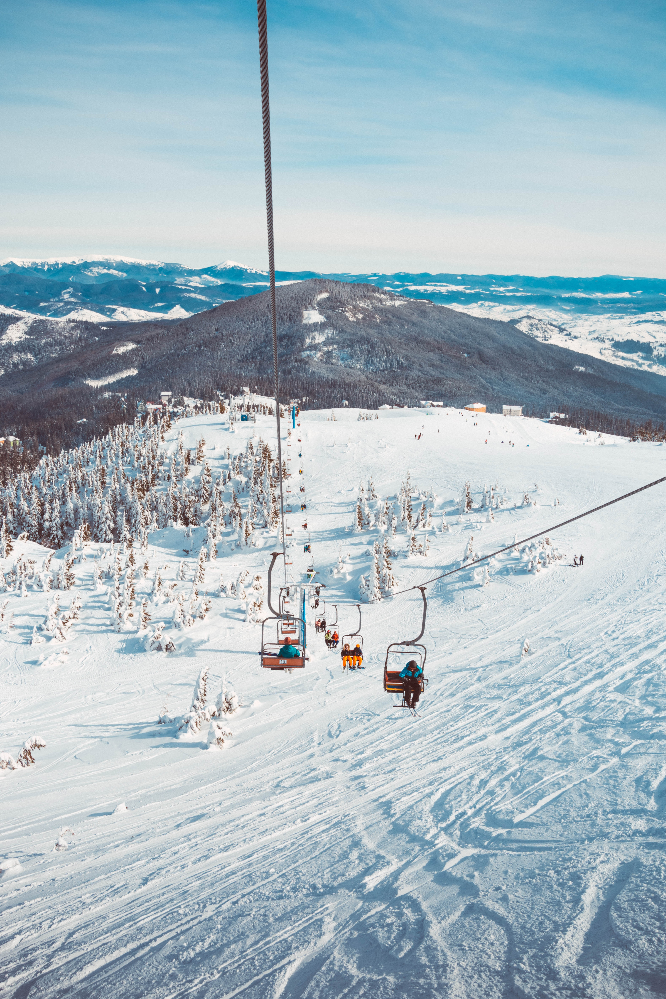

Municipality Ladek Zdroj
Municipality Ladek Zdroj

Ski resorts
Located in a picturesque mountain area, the ladder has excellent conditions for downhill skiing. 9 ski lifts located in the area of the village make the caddie a paradise for skiers and snowboarders. Stable conditions, competitive prices and well-prepared ski lifts guarantee a successful holiday. Check the map of the ski lifts in our village. Read more

Cross country ski
The Sudetenland landscape is ideal for cross-country skiing. The Ladek Commune together with local communities develops and maintains ski tracks for the use of skiers. There are also cross-country ski rentals in the area of the commune. Read more